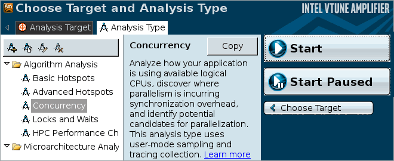

Run the Concurrency analysis to understand how effectively your
application is parallelized.
Run the Concurrency analysis to understand how effectively your
application is parallelized.
To run an analysis:
From the VTune Amplifier toolbar, click the New Analysis button.
New Amplifier Result tab opens with the Analysis Type window active.
On the left pane of the Analysis Type window, locate the analysis tree and select Algorithm Analysis > Concurrency.
The right pane is updated with the predefined settings for the Concurrency analysis.
- Select the Analyze Intel runtimes and user synchronization checkbox.
Click the Start button on the right command bar.

VTune Amplifier launches the nqueens_parallel application that makes calculations, displays the execution time, and exits. VTune Amplifier finalizes the collected results and opens the analysis results in the Hotspots by CPU Usage viewpoint.
To make sure the performance of the application is repeatable, go through the entire tuning process on the same system with a minimal amount of other software executing.
Note
This tutorial explains how to run an analysis from the VTune Amplifier graphical user interface (GUI). You can also use the VTune Amplifier command-line interface (amplxe-cl command) to run an analysis. For more details, check the Command-line Interface Support section of the VTune Amplifier Help.